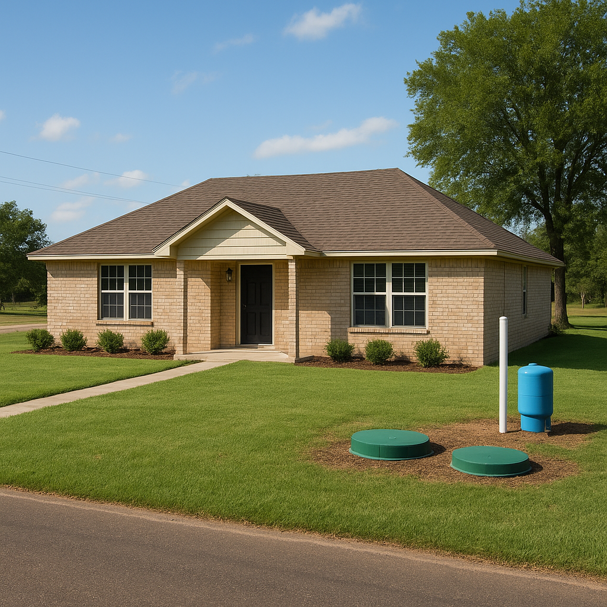

I'm Bond Peter Njoku (NMLS #2670329), and every USDA loan I close in Texas has to clear the same gate before it can fund: a USDA appraisal that enforces minimum property standards drawn from HUD Handbook 4000.1 — the same rulebook FHA uses. That means a USDA loan isn't only about your income and credit score. The house itself has to pass. In the rural-suburban pockets of Kaufman and Rockwall counties where USDA lending is strongest — Royse City, Forney, Terrell — I see the same handful of issues trip up buyers over and over: aging roofs, well and septic systems that haven't been serviced in years, foundation movement from Texas's notoriously expansive clay soil, and the wood-destroying insect report that's standard on nearly every Texas purchase contract. This guide walks through exactly what USDA appraisers look for, what commonly fails, and what happens next if your home doesn't pass the first time.
What Property Condition Standards Does a USDA Loan Require in Texas?
USDA doesn't write its own separate property rulebook — it adopts HUD Handbook 4000.1, the same minimum property standards (MPS) that FHA appraisers use nationwide. In plain terms, the home has to be safe, sanitary, and structurally sound. The appraiser isn't grading finishes or décor; they're checking that the roof keeps water out, the systems that keep the home livable actually work, and nothing on the property poses an immediate hazard to the people living there or to USDA's guarantee on the loan. If you'd like the full picture of how the USDA loan program works beyond property condition — income limits, eligible areas, fees — I've covered that on my USDA loans page.
Where this catches Texas buyers off guard is scope. A conventional appraisal is mostly about value — does the home support the loan amount? A USDA appraisal does that too, but it layers on a condition checklist most conventional buyers never think about until it's their turn.
What's the Difference Between a USDA Appraisal and a Home Inspection?
USDA requires an appraisal on every loan — that part isn't optional. A full home inspection, on the other hand, is not technically required by USDA itself, but I recommend one to every client, without exception. The appraiser is doing a fairly quick walk-through to confirm the property meets minimum standards and supports the loan; a licensed inspector spends hours going room by room, attic to crawlspace, and will catch problems the appraiser has no reason to flag because they don't affect loan eligibility. I've had clients whose appraisal came back clean but whose inspection turned up $4,000 in plumbing issues the appraiser simply wasn't looking for. Skipping the inspection to save a few hundred dollars is one of the more expensive mistakes I see buyers make.
What Are the Most Common USDA Inspection Fail Points in DFW Rural-Suburban Homes?
After years of closing USDA loans across Kaufman, Rockwall, and the surrounding counties, the same issues come up again and again. Here's what actually trips up a USDA appraisal in this market:
- Roof with under about two years of remaining life. Appraisers estimate a roof's remaining useful life. If it's visibly worn, missing shingles, patched repeatedly, or already leaking, expect a repair or full replacement requirement before closing — not just a note in the file.
- Non-functioning well or septic system. This is the single most common fail point I see on the larger rural-suburban lots common in Kaufman County. A well or septic system that can't be proven functional is an automatic red flag, and septic often requires its own separate inspection from a licensed septic contractor — distinct from the general home inspection — confirming the system can handle the home's wastewater load.
- Missing or unresolved Texas wood-destroying insect (termite) report. Texas is a high termite-activity state, and a WDI report is standard practice on nearly every purchase contract here, USDA or not. Active infestation or existing structural damage has to be treated and, if needed, structurally repaired before I can clear the loan.
- Foundation issues from expansive clay soil. DFW sits on notoriously reactive clay that swells and shrinks with moisture swings. Visible cracking, doors or windows that stick, or uneven flooring will get flagged, and often require a foundation engineer's report before USDA underwriting will move forward.
- Peeling or chipping paint on pre-1978 homes. Federal lead-based paint rules apply to any home built before 1978. Peeling, flaking, or chipping paint — interior or exterior — has to be scraped, stabilized, and repainted before closing. This isn't cosmetic in USDA's eyes; it's a required repair.
- Non-functioning electrical, plumbing, or HVAC systems. Exposed wiring, missing outlet covers, no working heat source, or a water heater that doesn't function are common fails, especially in older homes throughout this corridor.
- Missing handrails or broken windows. Cheap to fix, but a stairway without a handrail, broken window glass, or missing smoke detectors will stop a closing until corrected — appraisers treat these as safety items, not cosmetic ones.
How Do Well and Septic Systems Affect USDA Approval in Kaufman County?
This deserves its own section because it's where I see the most deals stall. Many homes in Royse City, Forney, and rural Rockwall County sit on private well and septic rather than city water and sewer — that's simply how larger rural-suburban lots out here are built. USDA requires proof that the septic system is functioning and sized correctly for the home, which usually means a pump-and-inspect from a licensed septic contractor, sometimes separate from your general home inspection entirely. The well typically needs a water quality test for bacteria and nitrates. If either system fails, you're looking at repair, replacement, or — rarely, if available — connection to a public system, and any of those can add real cost and real time to your closing timeline. Before you fall in love with a property, it's worth confirming the general area qualifies at all — I keep an updated list of which DFW cities qualify for a USDA loan so you're not chasing a home that needs major well or septic work in a market that won't even support USDA financing.
Does Texas Require a Termite Report for a USDA Loan?
USDA itself doesn't mandate a wood-destroying insect report as a blanket national rule, but in practice, it's close to universal on Texas purchase transactions because our state has such consistently high termite activity. A licensed pest control applicator inspects the structure for active infestation and prior damage. If they find live activity, it has to be treated. If they find damage — even old damage — a contractor typically has to certify the structural repair before I can clear your file to close. This is one spot where I see out-of-state buyers get caught off guard: they assume the termite report is optional because it's not a formal USDA requirement on paper, when in reality it's baked into nearly every Texas contract regardless of loan type.
What Happens If a Home Fails USDA Inspection?
A failed appraisal or inspection doesn't automatically kill the deal. In my experience, it plays out one of three ways:
- Seller-paid repairs. The most common outcome. The seller agrees to complete the required repair (or credit you the cash at closing) before we fund. The appraiser then re-inspects to confirm the work was done — this typically adds one to two weeks and a re-inspection fee, usually in the $100–$200 range.
- Renegotiation. If the seller won't pay for the repair outright, we can sometimes renegotiate the purchase price to offset the cost, or split it.
- Walking away. If your contract's option period or appraisal contingency is still open and the seller won't budge, you can walk away and keep your earnest money, depending on how the contract is written.
What you cannot do is close a USDA loan with a known safety or structural issue still unresolved. USDA won't guarantee the loan until the property passes — that's non-negotiable, and it's exactly why I walk every client through likely fail points before they ever write an offer.
How Do USDA Property Standards Compare to a Conventional Loan?
This is the comparison I get asked about most, because it changes how buyers shop. A conventional appraisal is focused almost entirely on value and marketability — it does not enforce the same condition checklist USDA and FHA require.
| Requirement | USDA (HUD 4000.1 MPS) | Conventional |
|---|---|---|
| Governing standard | Safe, sanitary, structurally sound | Value/marketability only |
| Roof condition | Must have adequate remaining life | Flagged only if it affects value |
| Well/septic function | Must be proven functional | Generally not verified |
| Termite/WDI report | Standard TX practice; damage must be repaired | Buyer's discretion, not lender-required |
| Pre-1978 peeling paint | Must be stabilized/repainted | Typically not required |
| Who orders repairs | Required before closing | Negotiated between buyer/seller |
In short: USDA (like FHA) protects the government's guarantee by requiring the home to actually be livable and safe, not just valuable. Conventional loans leave condition almost entirely to the buyer's own inspection and negotiation. That's a real trade-off — USDA's standards can occasionally slow a closing down, but they also protect you from buying a home with a hidden septic or foundation problem that a conventional appraisal would have sailed right past.
What Does a Failed USDA Inspection Actually Cost in Royse City?
Let me walk through a composite scenario built from clients I've worked with — I'll call them the Delgado family. They had a 682 credit score and were under contract on a $255,000 home in Royse City, financing with a USDA loan and $0 down. Their appraisal came back with one required repair: the septic system couldn't be verified as functioning and needed a licensed contractor's inspection and a pump-out. The contractor's quote came in at $6,800 to bring the system up to standard.
Here's how it played out: I helped the Delgados negotiate a seller-paid repair credit for the full $6,800 rather than reducing the purchase price, which kept their loan amount and USDA eligibility math clean. The seller's contractor completed the work, the appraiser re-inspected eleven days later, and we closed on schedule with one short delay. Had they been financing with a conventional loan instead, the appraiser likely would have simply noted the septic system's presence without requiring proof it worked — meaning the Delgados could have closed with a failing system and discovered the $6,800 problem themselves, out of pocket, a few months after move-in.
Now let's look at what their actual monthly payment worked out to. On a $255,000 purchase price with $0 down, USDA finances a 1% upfront guarantee fee into the loan: $255,000 × 1% = $2,550, bringing the total loan amount to $257,550. Using the standard amortization formula M = P[r(1+r)^n] / [(1+r)^n − 1] at a 7.0% rate (r = 0.005833 monthly, n = 360 payments):
- Principal & interest: approximately $1,713.49/month
- USDA annual fee (0.35% of the loan balance, billed monthly): $257,550 × 0.35% ÷ 12 ≈ $75.12/month
- Total principal, interest, and USDA fee: approximately $1,788.61/month (before property taxes, homeowners insurance, and any escrow)
Compare that to what the same $257,550 loan would cost with FHA's mortgage insurance instead of USDA's annual fee — FHA's MIP runs closer to $150–$160/month on a loan this size, meaning the Delgados are saving roughly $75–$85 a month, or close to $1,000 a year, simply by qualifying for USDA over FHA. That's on top of paying $0 down. If you're evaluating whether USDA or FHA makes more sense for your situation, I've broken down that full comparison separately, and if you want to check your own household against the current limits, review the 2026 USDA loan income limits for Texas before you start shopping — property condition is only half the equation.
If you're specifically house-hunting in Royse City, I've put together a dedicated Royse City loan page with local numbers and eligible neighborhoods, since it's one of the strongest USDA markets in the entire DFW metroplex.
Frequently Asked Questions
What property condition standards does a USDA loan require in Texas?
I'm Bond Peter Njoku (NMLS #2670329), and every USDA loan I originate in Texas requires the property to meet HUD's minimum property standards — the same basic safe, sanitary, and structurally sound requirements FHA appraisers use. That means a functioning roof, working electrical, plumbing, and HVAC systems, no active safety hazards, and, for rural-suburban lots, a well and septic system that are proven to work. It's not a full home inspection, but it's more than a conventional appraisal typically requires. Call or text me at 469-545-7180 and I'll walk you through what a specific property needs before you write an offer.
What is the most common reason a home fails USDA inspection in DFW?
In my experience closing USDA loans across Kaufman and Rockwall counties, the two most common fail points are roofs with too little remaining useful life and septic systems that can't prove they're functioning properly. Both are common on the larger rural-suburban lots you'll find in Royse City and Forney, where homes sit on private well and septic instead of city utilities. Foundation cracks from our expansive clay soil are a close third. I'm Bond Peter Njoku (NMLS #2670329) — call or text me at 469-545-7180 before you go under contract and I'll flag likely issues early.
Does Texas require a termite report for a USDA loan?
Yes — while USDA itself doesn't mandate a wood-destroying insect report nationwide, it's standard practice on nearly every Texas purchase transaction, USDA included, because Texas is a high termite-activity state. A licensed pest control applicator inspects for active infestation and existing damage, and any structural damage found has to be treated and repaired before I can clear your loan to close. I'm Bond Peter Njoku (NMLS #2670329) — call or text 469-545-7180 and I'll make sure your termite report gets ordered at the right point in your timeline.
What happens if the seller won't fix issues found in a USDA appraisal?
You generally have three options: negotiate a price reduction or closing-cost credit to cover the repair yourself, walk away if your contract's option period or appraisal contingency allows it, or have a licensed contractor complete the repair so the appraiser can re-inspect before we fund. What you can't do is close a USDA loan with a known safety or structural issue still unresolved — USDA won't guarantee the loan until the property passes. I'm Bond Peter Njoku (NMLS #2670329), and I've negotiated plenty of these repair credits for my clients. Call or text me at 469-545-7180 before you assume a failed inspection means a dead deal.
Not sure if a property will pass USDA's condition standards?
I'm Bond Peter Njoku (NMLS #2670329). Send me the listing before you write an offer and I'll flag likely roof, septic, or foundation issues based on what I see every week in Kaufman and Rockwall counties. Call or text me at 469-545-7180, message me on WhatsApp, or start your pre-approval online.